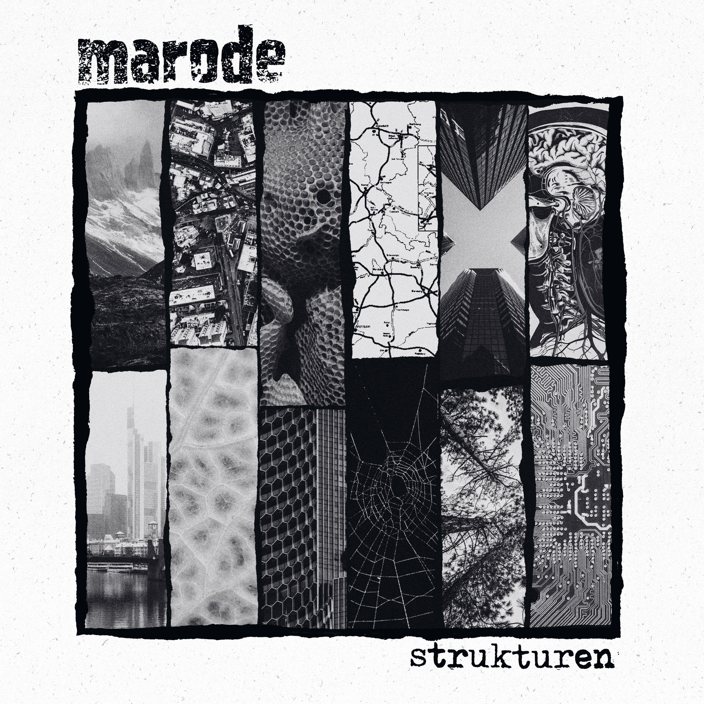

Vorab gehört
MARODE - Strukturen
Artikel anhören
Audiofassung des Artikels

Vorab gehört: Strukturen erscheint offiziell am 16. Oktober 2026. Dan konnte das Album bereits vor Veröffentlichung hören. Einen Songlink setzen wir erst, sobald Band oder Label das Material öffentlich freigegeben haben.
MARODE kommen aus Düsseldorf. Hatte ich MARODE in letzter Zeit nur sekundär auf dem Schirm, freut mich die Info, dass es sich um eine Düsseldorfer Kombo handelt, da mir erfahrungsgemäß aus dieser Stadt immer gute Musik garantiert wurde. Dabei meine ich jetzt nicht die beiden ganz großen Stadionbands (!), eher authentische Truppen wie z. B. DIE SCHWARZEN SCHAFE oder 100BLUMEN, um nur einen Bruchteil zu nennen.
Nun gut, widmen wir uns MARODE. Das Flicken-Design des Albumcovers macht schon echt was her, immerhin hört das Auge mit.
Elf Songs sind auf dem Album. Simpel, direkt in your face, Tempo mal Midtempo, mal zackig, gut angesetzter Wechselgesang, textlich fernab vom Phrasengedresche, aber auch nicht zu verkopft.
Kein Song knackt die Drei-Minuten-Grenze, man kommt direkt auf den Punkt und lässt dem Hörer keine Zeit zum Durchatmen. Erinnert mich teilweise an Rachut-Bands wie DACKELBLUT oder ANGESCHISSEN, ohne diese Bands zu kopieren.
Vielleicht komme ich bald mal in den Genuss, MARODE live zu sehen. Ich glaube, dass es live noch mal richtig knallt. Irgendwie Oldschool-Sound, aber doch mit einer gesunden Prise Moderne. Besonders sticht der Song „Ausgerenkt“ hervor. Die Strophen werden hier im Erzählerstil dargeboten, dann dazu der schmissig gesungene Chorus. Hier kommen mir irgendwie frühe, rotzige MUFF POTTER in den Sinn.
Das ist auf jeden Fall wieder ein Hoffnungsschimmer zwischen den vielen neuen Schrammel-Indie-Studenten-Punkbands, die zwar ihre Daseinsberechtigung haben, aber persönlich nicht mein Punk sind. Danke, MARODE, für eure Aufrechterhaltung des Mittelfinger-Punks.
Strukturen erscheint am 16. Oktober 2026 als auf 300 Exemplare limitierte schwarze LP bei Raccoone Records, RilRec und Trashout.
MARODE im Netz
MARODE auf Instagram
MARODE auf Facebook
Strukturen vorbestellen